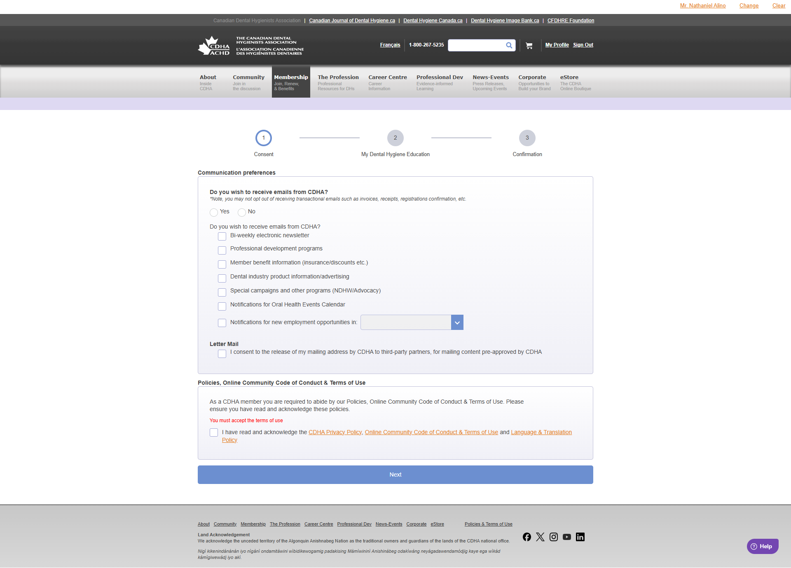
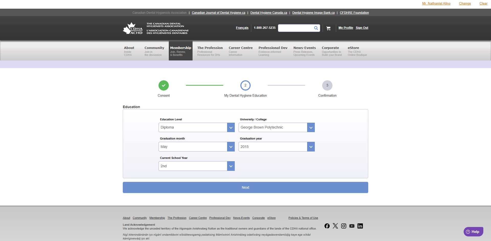
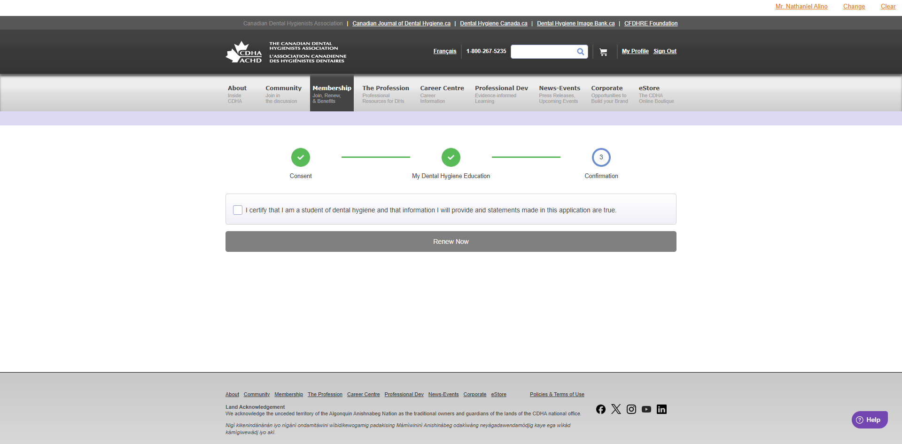

Renew STU Flow Images
This page is a visual companion to join-renew-profile-ux-rules.md.
1. Communications

2. Education

3. Confirmation

This page is a visual companion to join-renew-profile-ux-rules.md.


